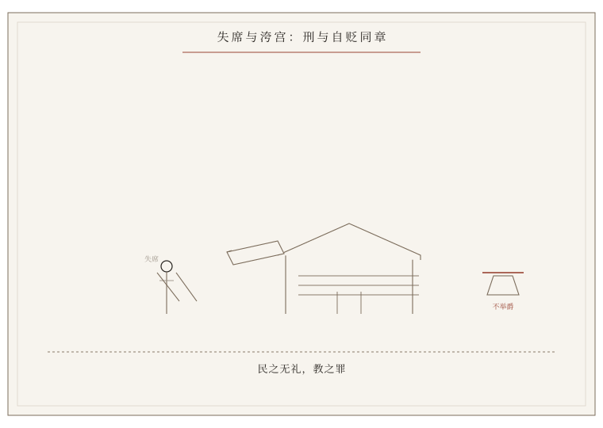

檀弓下 · 四·八十 · 第 405 课
邾娄定公之时，有弑其父者。有司以告，公瞿然失席，曰：「是寡人之罪也。」曰：「寡人尝学断斯狱矣。臣弑君，凡在官者，杀无赦；子弑父，凡在宫者，杀无赦。杀其人，坏其室，洿其宫而猪焉。盖君逾月而后举爵。」
说什么事：邾娄定公的时候，有人杀了自己的父亲。有司来报，定公惊得从席上起身，说：「这是寡人的罪。」又说：「寡人曾学过断这类狱。臣杀君，凡在官的人都可以杀他，不得赦；子杀父，凡在宫的人都可以杀他，不得赦。杀其人，毁其室，掘污其宫而聚水其中。大约君要过一个月才举杯。」
落在哪一层：以「教之罪」为界。民有无礼，君先认自己的罪，然后才讲刑。
为何编在此位：上节论与者之倨，此节论君之自贬。一在野，一在朝，皆见礼之「自反」。
【经】邾娄定公之时，有弑其父者。有司以告，公瞿然失席，曰：「是寡人之罪也。」曰：「寡人尝学断斯狱矣。臣弑君，凡在官者，杀无赦；子弑父，凡在宫者，杀无赦。杀其人，坏其室，洿其宫而猪焉。盖君逾月而后举爵。」
【注】定公，玃且也。鲁文十四年即位。／民之无礼，教之罪。／言诸臣子孙无尊卑皆得杀之，其罪无赦。／明其大逆，不欲人复处之。猪，都也。南方谓都为猪。／自贬损。
【疏】此一节论诛弑父之事。○定公既见有司告以人弑其父，乃言曰：寡人尝试学断此弑父之狱矣，臣之弑君，凡在官之人，无问贵贱，皆得杀此弑君之人，无得纵赦之也。子之弑父，凡在宫者，无问尊卑，皆得杀此弑父之人，不得纵赦之。此「在宫」字，诸本或为「在官」，恐与上「在官」相涉而误也。○言「诸臣」，解「在官」者；言「子孙」，解「在宫」者。谓理合得杀，若力所不能，亦不责也。故《春秋》崔杼弑庄公，而晏子不讨崔杼，而不责晏子。若力能讨而不讨，则责之。《春秋》董狐书赵盾云「子为正卿，亡不出竟，反不讨贼，书以弑君」是也。郑此云子孙无问尊卑皆得杀之，则似父之弑祖，子得杀父。然子之于父，天性也，父虽不孝于祖，子不可不孝于父。今云「子」者，因「孙」而连言之，或容兄弟之子耳。除子以外，皆得杀其弑父之人。《异义》：「卫辄拒父，《公羊》以为孝子不以父命辞王父之命，许拒其父。《左氏》以为子而拒父，悖德逆伦，大恶也。」郑《驳异义》云：「以父子私恩言之，则伤仁恩。」则郑意以《公羊》所云，公义也；《左氏》所云，是私恩也。故知今子之报杀其父是伤仁恩也。若妻则得杀其弑父之夫，故《异义》云：「妻甲夫乙欧母，甲见乙欧母而杀乙。」《公羊》说甲为姑讨夫，犹武王为天诛纣。郑驳之云：「乙虽不孝，但欧之耳，杀之太甚。凡在宫者，未得杀之。杀之者，士官也。」知郑此言，欧母，妻不得杀之；若其杀母，妻得杀之。○「猪，都也」。案孔注《尚书》云「都谓所聚也」，此经云「洿其宫而猪焉」，谓掘洿其宫，使水之聚积焉。
定公 邾君，名玃且。
弑 下杀上、子杀父。
瞿然 惊遽之貌。
失席 离席而起。
断斯狱 断此狱。
在官 在官位者。
在宫 在宫室之内者，谓子孙。
杀无赦 杀之不赦。
坏其室 毁其屋。
洿其宫 掘污其宅。
猪 水所聚。南方谓都为猪。
逾月 过一个月。
举爵 举杯，谓饮酒。
邾娄定公的时候，有人杀了自己的父亲。有司来报，定公惊起离席，说：「这是寡人的罪。」又说：「寡人曾学过断此种狱。臣杀君，凡在官的人，都该杀他，不得赦；子杀父，凡在宫的人，都该杀他，不得赦。杀其人，毁其屋，掘污其宅而聚水其中。大约君要过一个月才举杯。」
此章三层：一惊、一法、一自贬。
惊在先，法在后，自贬在最末。
次序即分寸：不先认罪，则刑为泄怒；不后自贬，则法为苛政。
第一层 「瞿然失席」 闻弑父而惊起离席，是不待思而动的容。
礼之根，先在「能惊」。 一国之中有人弑父，君若不动容，则礼已先死。
第二层 「是寡人之罪也」 注四字：「民之无礼，教之罪。」
此一句最重。 民有无礼，君不推于民，推于己之教。礼之政，先责上。
第三层 法之两面 在官者杀、在宫者杀。
疏辨「在宫」诸本或作「在官」，「恐与上在官相涉而误」——礼家连一个字的相涉都不放过。
第四层 「理合得杀，力所不能亦不责」 疏此一句，把「杀无赦」从「人人必须动手」拉回「人人有其义」。
故晏子不讨崔杼而不责，赵盾不讨贼而见书。 礼之责，责其力所能为者。
第五层 子不得杀父 郑云「子孙无问尊卑皆得杀之」，疏即驳其似「父弑祖则子得杀父」，而以「因孙而连言」解。
此一辨，是全章最要紧处。 一句「杀无赦」，若照字面推，便推到「子可杀父」；礼家于此断然止住：除子以外，皆得杀。
第六层 妻之界 《异义》有「妻杀欧母之夫」之问，郑驳：欧母未至杀，妻不得杀；若其杀母，妻得杀之。
礼于「报」之一事，一层一层量：欧与杀不同，母与姑不同，能讨与不能讨不同。
第七层 「逾月而后举爵」 注云「自贬损」。
刑至酷，而君自减一杯。 一国之内有人弑父，君一月不举爵——此即「教之罪」的践行。
与今日何干 今有恶性之事，上多推于下；偶有自认者，又止于一句「痛心」。
此章给一句：先认教之罪，刑才不是泄怒。
| 左 | 右 |
|---|---|
| 有弑其父者 | 大逆 |
| 瞿然失席 | 不待思而动 |
| 是寡人之罪 | 教之罪 |
| 在官者杀 | 诸臣 |
| 在宫者杀 | 子孙 |
| 力不能则不责 | 责其能为 |
| 子不得杀父 | 连言之辨 |
| 坏室洿宫 | 不欲人复处 |
| 逾月不举爵 | 自贬损 |
画一幅简略的室内场景，视点平视。画面右侧画一间小屋：两根立柱、一道屋檐、檐下一道门限。屋内地面画三道横向的波纹线，示「水聚其中」。屋之左上方画一张斜翻的席，席角离地，示「失席」。画面左侧画一人形跪坐，双手按地，头微仰。画面下方画一只小杯，杯口朝下倒置。不画文字。赭色只用在那三道水波线的中间一道上。
